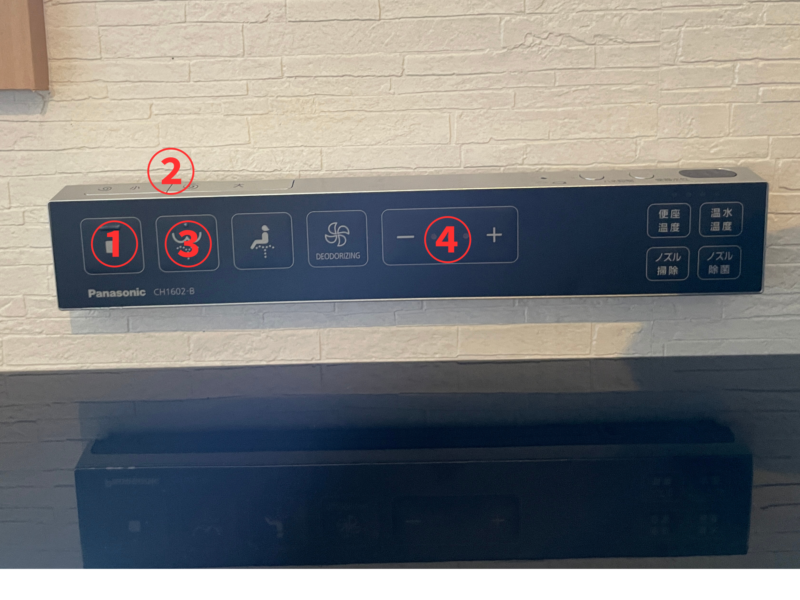
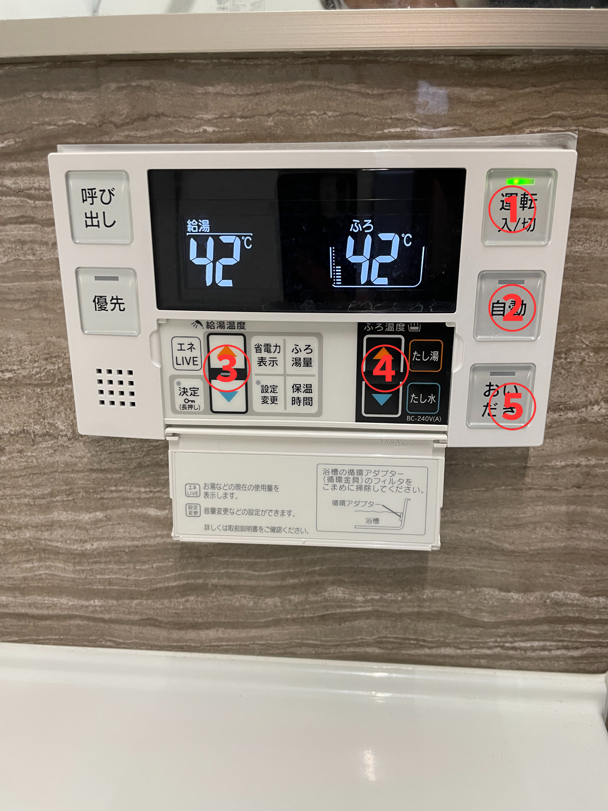
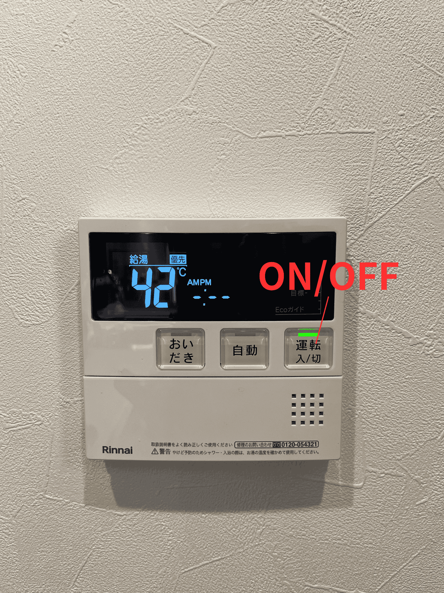
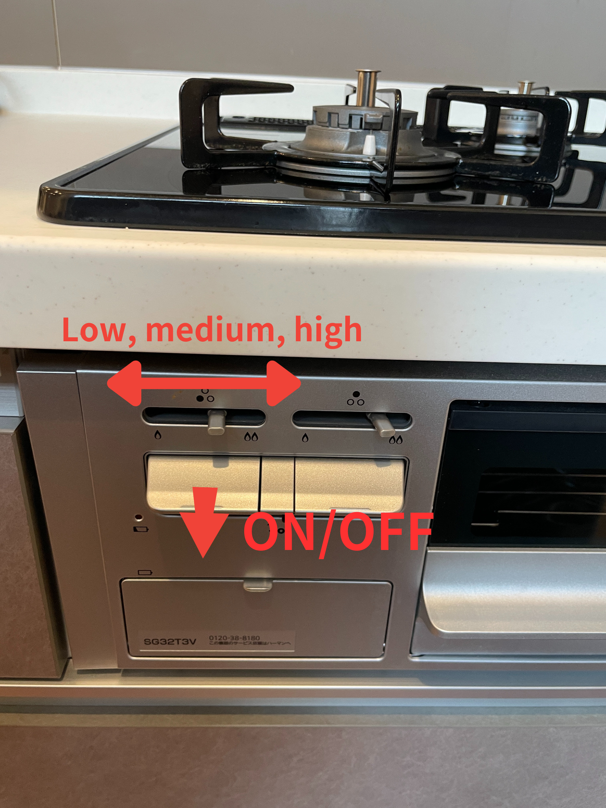
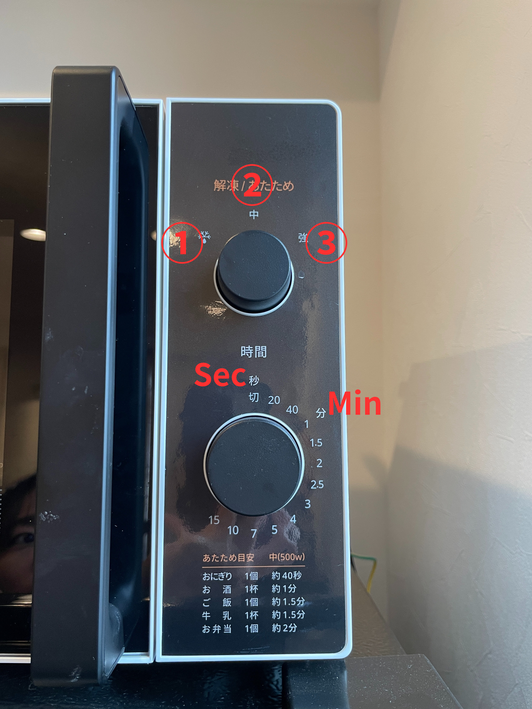
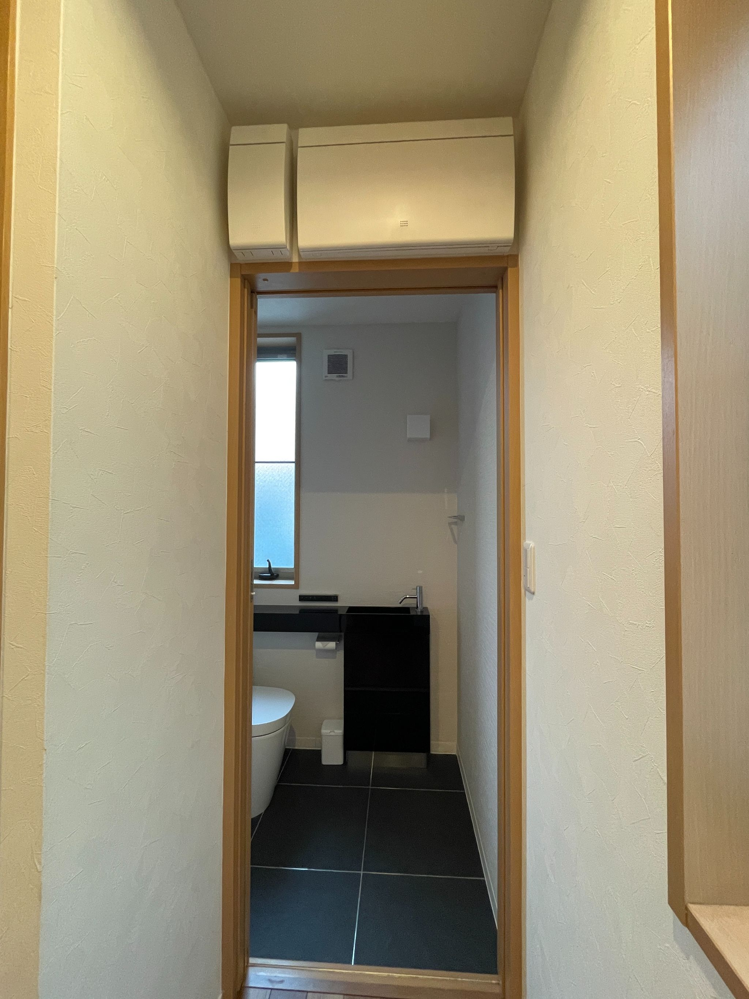
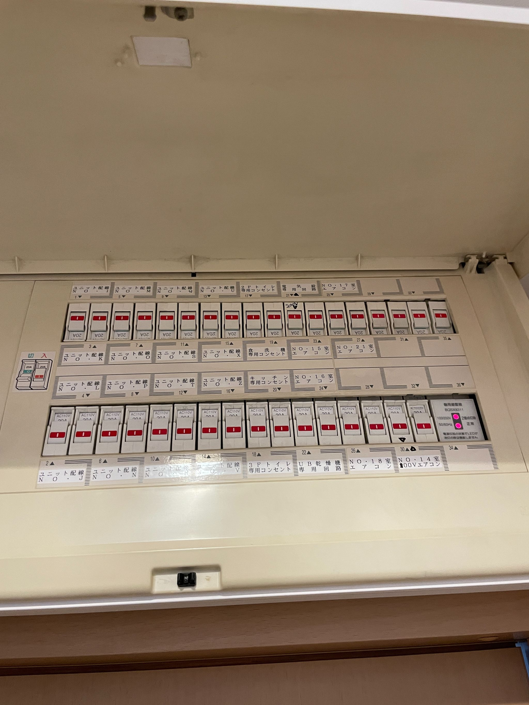

ハウスマニュアル
🚨重要なお知らせ
🚨 Important Notice
室内およびバルコニーでの喫煙は固く禁止されています。喫煙が確認された場合、ペナルティとして30,000円を請求いたします。
Smoking is strictly prohibited indoors, on the balcony, and in all areas around the building. If smoking is detected, a penalty fee of ¥30,000 will be charged. This policy is in place to maintain a clean, safe, and comfortable environment for all guests and residents.
Image reference: image
Projector remote
プロジェクター リモコン
🔑When prompted for a password, please enter《↑↓←→》.
パスワードを求められた際は《↑↓←→》を入力してください
💡For other FAQs, please refer to the bottom of the official product page.
そのほかのFAQに関しては、こちらの公式製品ページ下部をご覧くださいませ。
[ https://www.aladdinx.jp/blogs/aladdin-support-faq?page=2&srsltid=AfmBOooya_t8PKqPSe3qDB2p_MadFVjeYYmyZQvsCgAVrfKDMNmzoe8S ]
①ON/OFF
②volume
③menu
④Light ON/OFF
.png)
Image reference: image
AC remote
①暖房 heating
②冷房 cooling
③除湿 dry
④温度 temperature
⑤停止 stop

Washlet（bidet）
ウォシュレット
①OFF
②flush
③shower toilet
④strength
.png)
Bath room/hot water panel
浴室給湯パネル

①ON/OFF
②auto
③shower temperature
④bathtub temperature
kitchen/hot water panel
キッチン給湯パネル

Gas cooker
ガスコンロ

rice cooker
炊飯器
Image reference: image
.png)
①cancel
②cooking/reheat
Bath dehumidifier
浴室暖房乾燥機
.png)
①OFF
②heater
③dry
④ventilation
Microwave
電子レンジ

①thaw
②middle temperature
③high temperature
Laundry machine
洗濯機
.png)
1. Press the power button (①)
2. Select standard course(標準） (②)
3. Press start (③)
Circuit Breaker
ブレーカーが落ちた場合


If the breaker trips, turn off any appliances that were in use at the time and turn up all the switches.
もしブレーカーが落ちた場合、ブレーカーを全て上げて下さい。
Gas Supply
ガスが止まった場合
.jpg)
.png)
When all the hot water supply in the house is stopped,
reset the gas meter outside.Please keep the button pressed.
給湯器がONになっているのにも関わらずお湯が出ない場合は、玄関向かって右側にございますガスメーターの復帰ボタンを長押しして下さい。
[Video](https://youtu.be/0YSmTuE4r2E?feature=shared)
Garbage separation
ゴミストッカー

.png)
Please put the full-garbage bag in the trash stocker on the outside.
お部屋のゴミがいっぱいになりましたら、部屋の外にゴミストッカーがございますのでご利用ください。